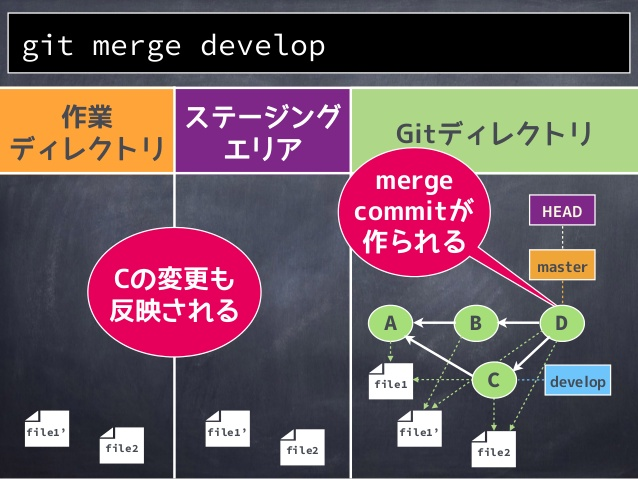
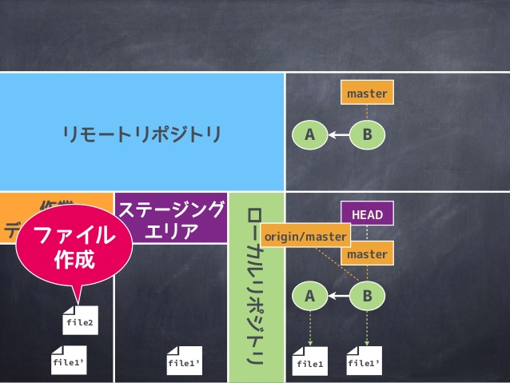

<!doctype html>
<html lang="en">
	<head>
		<meta charset="utf-8">
		<title>gitの基本</title>
		<meta name="description" content="A framework for easily creating beautiful presentations using HTML">
		<meta name="author" content="Hakim El Hattab">
		<meta name="apple-mobile-web-app-capable" content="yes" />
		<meta name="apple-mobile-web-app-status-bar-style" content="black-translucent" />
		<meta name="viewport" content="width=device-width, initial-scale=1.0, maximum-scale=1.0, user-scalable=no">
		<link rel="stylesheet" href="css/reveal.min.css">
		<link rel="stylesheet" href="css/theme/bw.css" id="theme">
		<!-- For syntax highlighting -->
		<link rel="stylesheet" href="lib/css/zenburn.css">
		<!-- If the query includes 'print-pdf', include the PDF print sheet -->
		<script>
			if( window.location.search.match( /print-pdf/gi ) ) {
				var link = document.createElement( 'link' );
				link.rel = 'stylesheet';
				link.type = 'text/css';
				link.href = 'css/print/pdf.css';
				document.getElementsByTagName( 'head' )[0].appendChild( link );
			}
		</script>
		<!--[if lt IE 9]>
		<script src="lib/js/html5shiv.js"></script>
		<![endif]-->
	</head>
	<body>
		<div class="reveal">
			<!-- Any section element inside of this container is displayed as a slide -->
			<div class="slides">
			<section data-markdown data-separator="\n---\n$" data-vertical="\n--\n"><script type="text/template">

<!--================================================ Markdownここから ================================================-->

# gitの基本
2015/07/01


---

#gitの構造

---


---


---


---


---


---


---


---


---

#覚えておかないと行けないデータ領域
* 物理構造
* 論理構造

---


---


---


---


---


---


---

#ローカルリポジトリまでの環境

---


---


---


---


---


---


---


---


---

#ブランチの考え方
* marge/rebase

---


---


---


---


---


---


---


---


---


---


---


---

#またローカルリポジトリまでの環境

---


---


---


---




---


---

#リモートリポジトリまでの環境

---


---


---


---


---


---


---


---


---


---


---


---


---


---

#全体の話

---


---



---


---


---


---


---


---


---

# 運用方法

---

#基本的な考え方
* git flow
* github flow
* gitlab flow

※各flowに関しては参考サイト参照

---

#使用するブランチ
* master
* develop
* feature
* fix

---

#各ブランチの役割

---

#masterブランチ

### 命名規則（固定）
- 出荷されうる完全な品質を保証する
- 特定のブランチからマージすることによってしか更新されない
- 直接コミットしてはならないという制約をもつ
- バージョンごとのtagはここから生まれる

---

#developブランチ

### 命名規則（固定）
- 開発中のコミットが行われる主軸
- featureブランチはここから派生
- 基本的にはここでは作業しない

---

#featureブランチ

### 命名規則:feature/[機能名][作業者名]
- 機能追加・改修などを行う作業ブランチ
- 完了後はdevelopブランチにマージされる
- コンフリクト有無に応じてmerge先が異なる

---

#fixブランチ

### 命名規則:fix[バグ識別名]
- バグ、修正作業に対しての修正作業ブランチ
- リリース後などに切る
- コンフリクト有無に応じてmerge先が異なる

---

#運用方法説明

---

###最初にmaster、developブランチを用意する
* 基本的な形
* masterとdevelopは同期させる

---

###追加したい機能、改修などのタイミングで、featureブランチを切る
* mergeさせる際に最初にfeatureブランチにmergeさせる
* コンフリクトが起きないことを確認し、developにmerge
* 大規模な機能追加、改修の場合mergeブランチ用ブランチを切っても良い

---

###一度提出したものの修正はfixブランチを切る
* masterブランチから切る
* masterブランチとdevelopブランチの両方にmergeさせる

---

#なぜこのような運用方法なのか?

---

###ブランチが管理しやすい！
* 誰が何をしたいのか？
* 誰が何をしているのか？
* 誰が何をしたのか?

がわかりやすくなる

---

###作業が混ざらない
* ルールを決め皆が遵守できればコンフリクトが起きない
* ブランチごとに役割、内容がわかるので、差分が取りやすい

---

###緊急対応に強くなる
* 現状のやっていることを残したまま作業ができる
* git stash popで簡単に戻せる

---

###別でも使いたい機能のみを抽出できる
* 機能別ブランチで切っている

---

###不具合の原因を追いやすい
* 誰が何をしたのでエラーが起きてるのかわかりやすい
* エラーが起きる前の状態に戻すことが簡単

---

#参考サイト

---

###読んだ方が良いスライド
*こわくない Git
*http://www.slideshare.net/kotas/git-15276118
*いつやるの？Git入門
*http://www.slideshare.net/matsukaz/git-17499005?related=1

---

###読んだ方がいいサイト(エンジニア向け)
*pro git(日本語版)
	https://progit-ja.github.io/
	※開発チームは必読にしてほしい

*gitでアレを元に戻す108の方法
	http://labs.timedia.co.jp/2011/08/git-undo-999.html
	※簡単なトラブル処理が載っている

---

###読んだ方がいいサイト(非エンジニアむけ)
*【Git入門者向け】イメージで理解するGitコマンド事始め
	http://kinokoru.jp/archives/1017
*本当は怖くない！デザイナーがGitを大好きになった♡５つの理由
	http://blog.nanapi.co.jp/tech/2014/04/23/git-love/
*git commit するまえに考えるべき10のこと
	http://hiroki.jp/2012/09/05/5523/

---

###考え方の参考flow
*git flow
	http://qiita.com/KosukeSone/items/514dd24828b485c69a05
	※なかなかわかりやすい
	http://danielkummer.github.io/git-flow-cheatsheet/index.ja_JP.html
	※視覚的に理解することができる

---

*git hub flow
	http://qiita.com/tbpgr/items/4ff76ef35c4ff0ec8314
	※運用方法の考え方なので、パクリではなく、案件に合わせてパロディーにしよう

*git lub flow
	http://postd.cc/gitlab-flow/
	※issue、ぷるりを使いこなしたい

---

###sourcetreeの裏技
*ディレクター向け
	http://ics-web.jp/lab/archives/1365/
	


<!--================================================ Markdownここまで ================================================-->

			</script><!-- そのままだと書けないので/を余計に書いています -->
			</section>
			</div>
		</div>
		<script src="lib/js/head.min.js"></script>
		<script src="js/reveal.min.js"></script>
		<script>
			// Full list of configuration options available here:
			// https://github.com/hakimel/reveal.js#configuration
			Reveal.initialize({
				controls: true,
				progress: true,
				history: true,
				center: true,

				theme: Reveal.getQueryHash().theme, // available themes are in /css/theme
				transition: Reveal.getQueryHash().transition || 'linear', // default/cube/page/concave/zoom/linear/fade/none

				// Parallax scrolling
				// parallaxBackgroundImage: 'https://s3.amazonaws.com/hakim-static/reveal-js/reveal-parallax-1.jpg',
				// parallaxBackgroundSize: '2100px 900px',

				// Optional libraries used to extend on reveal.js
				dependencies: [
					{ src: 'lib/js/classList.js', condition: function() { return !document.body.classList; } },
					{ src: 'plugin/markdown/marked.js', condition: function() { return !!document.querySelector( '[data-markdown]' ); } },
					{ src: 'plugin/markdown/markdown.js', condition: function() { return !!document.querySelector( '[data-markdown]' ); } },
					{ src: 'plugin/highlight/highlight.js', async: true, callback: function() { hljs.initHighlightingOnLoad(); } },
					{ src: 'plugin/zoom-js/zoom.js', async: true, condition: function() { return !!document.body.classList; } },
					{ src: 'plugin/notes/notes.js', async: true, condition: function() { return !!document.body.classList; } }
				]
			});
		</script>
	</body>
</html>
